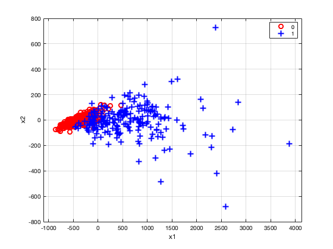
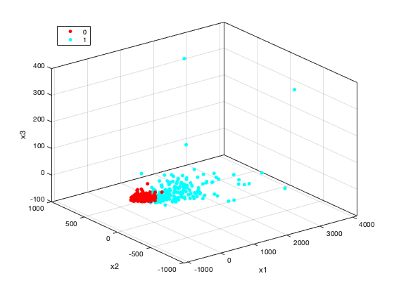

data = readtable('bc_wisc.csv');
data = data.Variables;
y = data(:, 2);
X = data(:,3:end);
disp('3a)')
B_glm = glmfit(X,y,'binomial');
disp('Maximum iteration exceeded - failed to converge - due to high dimension')
disp('3b)')
X_new= X - mean(X);
n = size(X_new,1);
S = 1/n * (X_new' * X_new);
[V, D] = eigs(S, 30);
D = diag(D);
lambda = [];
for q=2:10
fprintf("q=%d , Percentage of variance explained =%.2f%% \n", q, (sum(D(1:q))*100)/sum(D));
end
X_P = X_new*V;
disp('3c)')
figure(1);
gscatter(X_P(:,1), X_P(:,2), y, 'rb', 'o+', 8, 'on', 'x1', 'x2');
grid on
xlabel('x1');
ylabel('x2');
snapnow;
figure(2);
h = gscatter(X_P(:,1), X_P(:,2), y);
grid on
xlabel('x1');
ylabel('x2');
zlabel('x3');
gu = unique(y);
x3 = X_P(:,3);
for k = 1:numel(gu)
set(h(k), 'ZData', x3( y == gu(k) ));
end
view(3);
snapnow;
ind = 1:size(X,1);
disp('Row indices of outliers');
disp(ind(X_P(:,3)>250));
disp('3d)')
for q=2:10
X_new = X_P(:,1:q);
B_glm = glmfit(X_new,y,'binomial');
X_test = [ones(size(y)), X_new];
y_pred = X_test*B_glm>=0;
num_correct_predictions = (sum(y_pred==y)*100)/size(y_pred,1);
fprintf("q=%d, Percentage of correct predictions=%.2f%% \n", q, num_correct_predictions);
end
disp("Percentage of correct predictions increases slightly when we increase q. This is expected");
disp("Most of the variance is captures by q=2. However, when we capture more variance by increasing q,");
disp(" accuracy slightly increases.");
3a)
Warning: Iteration limit reached.
Maximum iteration exceeded - failed to converge - due to high dimension
3b)
q=2 , Percentage of variance explained =99.82%
q=3 , Percentage of variance explained =99.98%
q=4 , Percentage of variance explained =99.99%
q=5 , Percentage of variance explained =100.00%
q=6 , Percentage of variance explained =100.00%
q=7 , Percentage of variance explained =100.00%
q=8 , Percentage of variance explained =100.00%
q=9 , Percentage of variance explained =100.00%
q=10 , Percentage of variance explained =100.00%
3c)
 
Row indices of outliers
68 256
3d)
q=2, Percentage of correct predictions=93.21%
q=3, Percentage of correct predictions=93.04%
q=4, Percentage of correct predictions=95.54%
q=5, Percentage of correct predictions=95.36%
q=6, Percentage of correct predictions=95.36%
q=7, Percentage of correct predictions=94.64%
q=8, Percentage of correct predictions=95.36%
q=9, Percentage of correct predictions=95.71%
q=10, Percentage of correct predictions=96.07%
Percentage of correct predictions increases slightly when we increase q. This is expected
Most of the variance is captures by q=2. However, when we capture more variance by increasing q,
accuracy slightly increases.